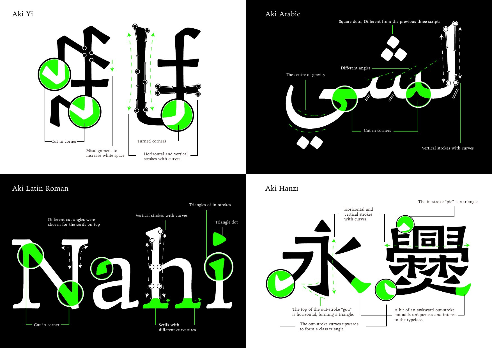
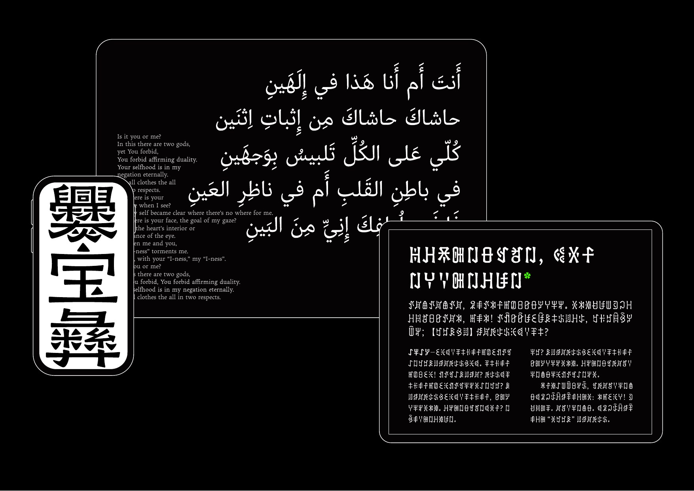

New York TDC x Young Ones 2025 · Yi / Hanzi / Latin / Arabic
Aki Family
A multi-script typeface system with calligraphic nuances, designed to give equal standing to Yi, Hanzi, Latin, and Arabic while keeping a shared visual voice.

Type tester
aki family

